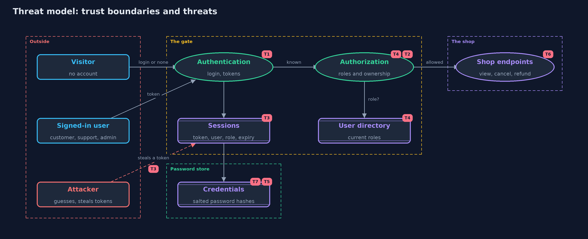

Threat Model — Authentication vs Authorization
A threat model answers four questions: what are we protecting, who or what could harm it, how, and what do we do about it. This one covers this project's own demo system, not a production deployment. Domain: an online store.
Scope
The store's order endpoints and the gate in front of them: the login with its session tokens, and the policy of roles and ownership. It covers who can pretend to be whom, what a signed-in person can reach, and what the gate costs. It does not cover how the request travels (HTTPS), how passwords are chosen, or multi-factor login.
What we protect (assets)
- Customers' orders and the right to view or cancel only your own.
- The refund action, which moves money.
- Session tokens, which stand in for a password.
- Accounts and their roles in the user directory.
- Password hashes.
Who and what acts on the system
- Customers (Ana and Ben): own orders.
- Support (Sam): views any order and issues refunds.
- Admin (Alex): may do everything.
- An anonymous visitor with no account.
- An attacker who steals or guesses a session token, or a customer trying to reach another customer's order.
Trust boundaries
A trust boundary is a line that data or a request crosses between parts that trust each other differently. Threats cluster where those lines are.
- Anonymous visitor to signed-in user: the login and the 401 answer.
- Signed-in user to action: the policy and the 403 answer.
- Session to directory: where a role is copied or looked up.
- Password to stored hash: where passwords stop being readable.

Each dashed box is a trust boundary. A rose tag such as T1 shows where the threat of that number, in the table below, applies.
Threats, using STRIDE
STRIDE is a checklist of six kinds of threat: Spoofing (S), Tampering (T), Repudiation (R), Information disclosure (I), Denial of service (D), Elevation of privilege (E).
| Id | Kind | Threat | Where it shows up | Control in this project | What is left |
|---|---|---|---|---|---|
| T1 | Spoofing | Someone guesses a password or uses a made-up token | Credentials.verify, Authenticator.authenticate |
Passwords are checked against a slow salted hash; unknown tokens get 401 | A weak password can still be guessed; password-attacks-and-defences covers this |
| T2 | Elevation of privilege | A logged-in customer refunds orders or reads other people's orders | LoginOnlyGate compared with PolicyGate |
A policy of roles and ownership answers 403 | Rules in code can be wrong; the policy table is tested for every case |
| T3 | Information disclosure | A stolen session token is used by someone else | Authenticator |
Tokens expire after a fixed number of ticks and can be ended with logout | Within its lifetime a stolen token works; transport protection and short lifetimes limit the harm |
| T4 | Elevation of privilege | A demoted user keeps their old rights until their session ends | PolicyGate with RoleSource.SESSION |
RoleSource.DIRECTORY looks the role up on every request |
A lookup on every request costs time, and the directory must be always available |
| T5 | Information disclosure | Password hashes are read from the store | Credentials |
Only salted PBKDF2 hashes are stored, never the passwords | Hashes can still be attacked offline; the demo's salt is derived from the username |
| T6 | Repudiation | A refund is made and nobody can say who did it | Shop.handle |
Every request is tied to a known session before it acts | The demo does not write an audit log; the audit trail belongs to a later project |
| T7 | Denial of service | Repeated logins use up the server | Credentials.verify (slow on purpose) |
None here | Slow hashing makes floods expensive for the server too; rate limiting is shown in cia-triad and password-attacks-and-defences |
Assumptions
- Requests travel over a protected channel; the transport-security module covers this.
- Tokens in the demo are numbered for repeatability. Real tokens must be long and random so they cannot be guessed.
- The directory is itself protected: only an admin can change a role.
Out of scope
- Phishing, and passwords chosen badly (the passwords-and-mfa module).
- Cookie and browser details such as SameSite, and cross-site request forgery.
- Token formats such as JWT, and single sign-on.
How the tests check this
CredentialsTestshows wrong passwords and unknown users are rejected.AuthenticatorTestshows tokens expire and can be ended early.PolicyTestchecks the rules for every role, action and ownership case.GateTestshows 401 for nobody and 403 for a known person who may not.StaleRoleTestshows a demotion is missed when the role is copied, and caught when it is looked up.
Where this model goes next
The with-spring-security project repeats this model with a framework. The passwords-and-mfa module then replaces the weakest assumption: how passwords are stored, attacked and strengthened.